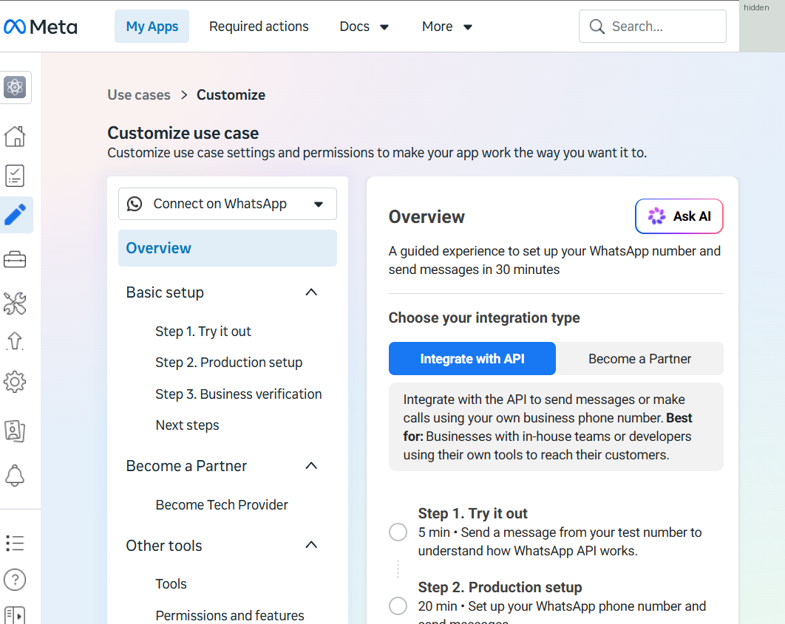
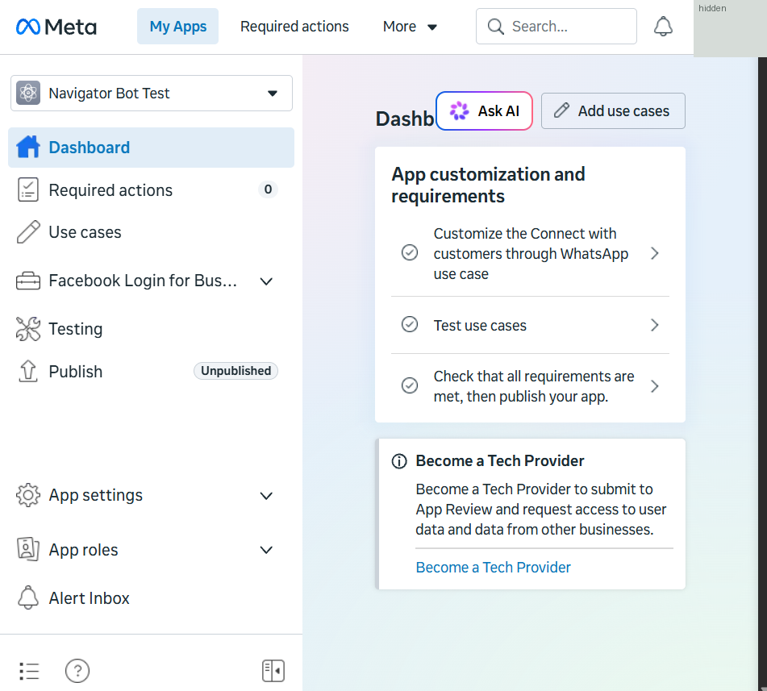
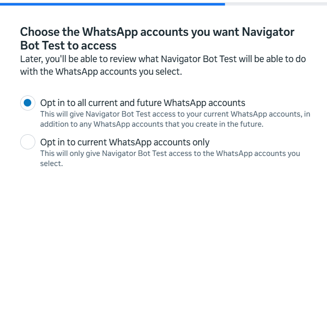
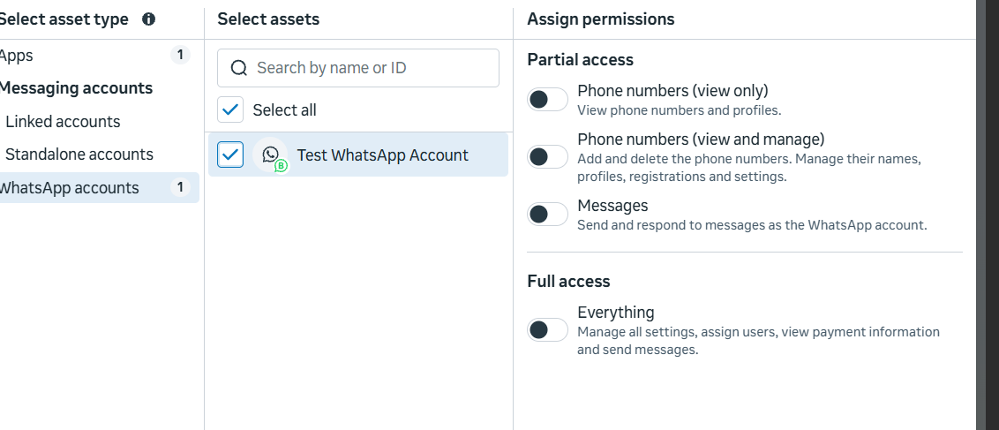
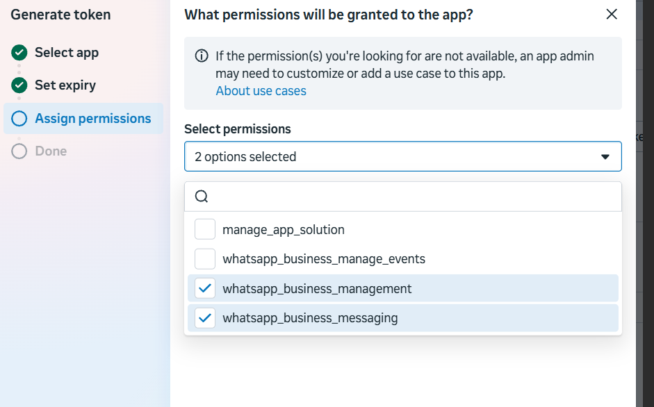
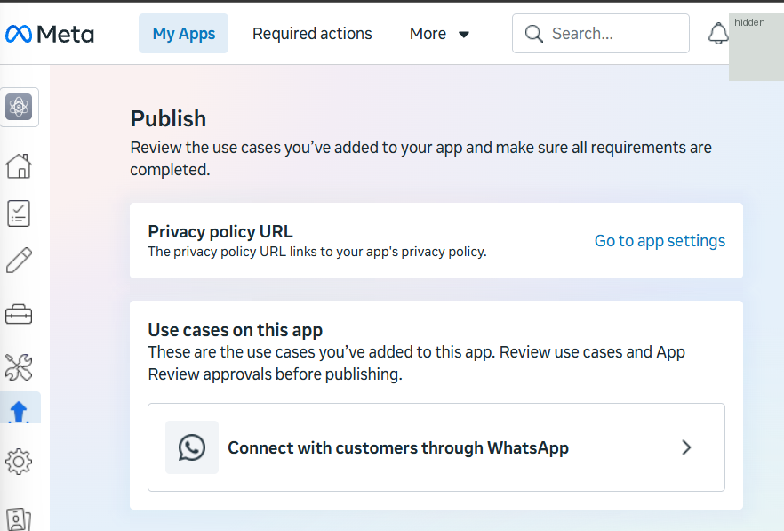
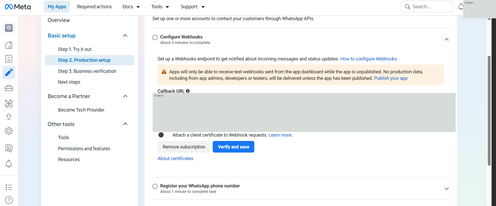
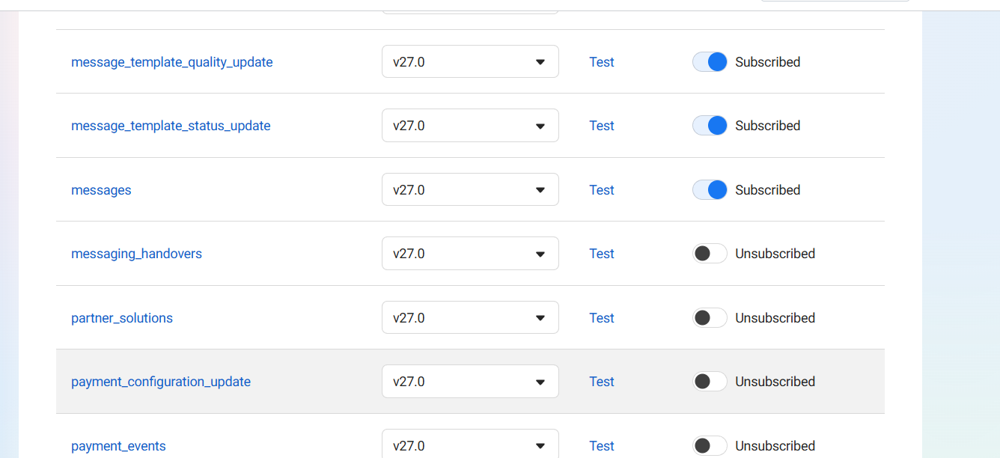

A step-by-step tutorial for the admin of the BRAC IT Stories business portfolio. It walks through every screen in order, says why each step matters, shows what the Meta pages look like, and warns about every problem we hit when we set up our own test account.
What you will have at the end
A WhatsApp Business Account inside the BRAC IT Stories portfolio, BRAC's own WhatsApp number for the bot, a permanent access token, billing, a published app, and the bot answering migrants on BRAC's number. Business verification will be under way.
How long it takes
About 1½–2 hours of work. Meta's own checks (business verification, display-name review) take from a few hours to two weeks, but you don't have to wait for them: everything works while they run.
The bot is already running. It answers on WhatsApp (on our test number), Telegram and the web today. This tutorial moves its WhatsApp side onto BRAC's own account. Only the bot's settings change, not its code.
Before you begin. Meta renames buttons often. The labels and screenshots here are from November 2026. If a label looks different, choose the closest match: the order of the steps stays the same. Screenshots come from our test account, so names like "Navigator Bot Test" will read differently on yours; personal details are hidden in grey.
Contents
Read this first: what comes after what
Before you start: what to prepare
Check the business portfolio
Start business verification
Create the Meta app
Create the WhatsApp Business Account and try the test number
Create the permanent access token (System User)
Add and verify the bot's phone number
Register the phone number (one command)
App secret and verify token
Billing
Privacy policy and publishing the app
Hand the credentials to the bot team
Final steps together: webhook, link, test
Quick troubleshooting index
Checklist and values sheet
Prepared by the BSAISL Navigator bot team, 24 November 2026. Based on Meta's WhatsApp Cloud API documentation (Graph API v27.0, checked November 2026) and our own setup.
0Read this first: what comes after what
Each step needs something from the step before it. Doing them out of order caused most of our own problems, so follow this order.
Who logs in: each admin with their own Facebook account. Never a shared login, and never "as the Facebook Page": a Page has no login of its own.
1 Prepare SIM, documents, password manager ..................... Part 1
2 Check the portfolio: admins and name .......................... Part 2
3 Start verification -> runs in the background for days ...... Part 3
| don't wait, continue:
4 Meta app (inside the portfolio) ............................... Part 4
5 WhatsApp Business Account (inside the app's setup) ............ Part 5
6 System User + permanent token (needs the app AND the WABA) .... Part 6
7 Add + verify the bot's number (needs the WABA + the SIM) ...... Part 7
8 Register the number (needs the token AND the number) .......... Part 8
9 App secret, verify token ...................................... Part 9
10 Billing ....................................................... Part 10
11 Privacy policy + publish the app .............................. Part 11
12 Hand the credentials to the bot team .......................... Part 12
13 TOGETHER with the bot team: webhook, link, test ............... Part 13
Where things live
Everything sits inside one business portfolio, Meta's company account. The portfolio already exists: BRAC IT Stories.
BRAC IT Stories business portfolio business.facebook.com
|- People: 2+ BRAC IT admins
|- Meta app "BRAC Navigator Bot" developers.facebook.com/apps -> app secret
|- WhatsApp Business Account (WABA) WhatsApp Manager -> WABA ID
| '- the bot's phone number (new SIM) -> Phone number ID
'- System user "navigator-bot" Business settings > Users -> access token
Website
What you do there
business.facebook.com
The portfolio: people, verification, System Users and tokens, billing
developers.facebook.com
The Meta app: WhatsApp setup screens, app secret, webhook, publishing
Missing any of the first four items stops the setup halfway, so gather them first.
Two BRAC IT staff as portfolio admins, each with their own Facebook account and two-factor authentication on (Facebook → Settings → Accounts Center → Password and security → Two-factor authentication). Several token screens refuse to work without it.
Company documents for verification: the trade licence or certificate of incorporation showing BRAC IT's exact legal name; if the address isn't on it, a recent utility bill or bank statement in the company's name.
A way to prove you control BRAC IT: the person who manages BRAC IT's website domain (they add one DNS record), or access to the business email or phone printed on the documents.
A brand-new mobile SIM (+880) for the bot:
never used with WhatsApp or WhatsApp Business;
in a phone with signal that can receive SMS and calls from abroad (Meta's code comes from outside Bangladesh);
owned by BRAC long term: you need it again to move or delete the number, and the number itself can never be changed.
The display name users will see: a name that clearly belongs to BRAC. Meta reviews it and rejects generic names such as "Migration Help".
A payment method for WhatsApp charges (company card, or BRAC's billing arrangement with Meta).
A square app icon, 1024 × 1024 pixels.
A password manager (or BRAC IT's secrets vault) for the token, app secret, verify token and PIN.
What you'll save along the way
Create one entry called "Navigator WhatsApp bot" in the password manager now and fill it in as you go. Meta shows some values only once.
Save
Where you get it
Secret?
Needed later for
Access token (System User)
Part 6
Yes, shown only once
The bot's settings; renewing before expiry
Token expiry date
Part 6
No
A calendar reminder to renew
App secret
Part 9
Yes
The bot's settings
Verify token
Part 9 (you make it up)
Yes
Connecting the webhook (Part 13)
Phone number PIN (6 digits)
Part 8 (you choose it)
Yes
Moving or deleting the number; re-registering
WABA ID
Part 5
No
The bot's settings; commands
Phone number ID
Part 7
No
The bot's settings; commands
Secrets (token, app secret, verify token, PIN) live in the password manager only. Never in email, chat, a shared document or a screenshot. Everything else may also go on the values sheet (Part 15).
Problems you may hit here
What you may see
What to do
The SIM already had WhatsApp on it
Delete that WhatsApp account first: WhatsApp app → Settings → Account → Delete account. Uninstalling the app is not enough; Meta will refuse the number.
2Check the business portfolio
Done by the admin who has full access. About 5 minutes.
Why this step: the app, the WhatsApp account, the token and the billing will all live in this portfolio, and only its admins can create them. Two choices are hard to undo later: which portfolio everything is created in, and its verified legal name.
Go to business.facebook.com and log in with your own Facebook account. Check BRAC IT Stories is selected in the portfolio menu at the top left.
Open Settings (gear, bottom left) → Users → People. Check your name shows Full control (Admin).
Add a second BRAC IT admin now: Add → their work email → Full control → Send invite. They accept from their email. One admin leaving is exactly how BRAC IT lost access to its old portfolio.
Open Settings → Business info and compare the business name with the legal name on BRAC IT's trade licence. Verification (Part 3) is rejected unless they match character for character. If the portfolio is named "BRAC IT Stories" but the documents say BRAC IT's legal name, rename it here before Part 3.
Talk to us if you're unsure. If BRAC IT Stories is meant to stay a separate brand and can't carry BRAC IT's legal name, tell us before Part 4: it decides whether this portfolio is the permanent home for the bot or only for the pilot.
Check it worked: Settings → Users → People lists two admins with Full control, and the business name matches the documents.
3Start business verification
Done by an admin with the documents. About 20 minutes of work, then a few days to two weeks of waiting.
Why this step: verification proves to Meta that the portfolio really is BRAC IT. It raises messaging limits, allows more phone numbers, helps the display name get approved, usually unlocks a token that never expires, and is likely needed for Meta's non-profit message exemption. It's free.
Go to business.facebook.com/latest/settings with BRAC IT Stories selected.
Open Security Center (on some screens under Business info) and click Start verification.
Enter the legal name, address, phone number and website exactly as on the documents. Use BRAC IT's own website domain.
Upload the trade licence or registration certificate; add a utility bill or bank statement if the address or phone isn't on it.
Choose how to confirm you control the business:
Domain verification (most reliable): Meta shows a DNS TXT record. Send it to whoever manages BRAC IT's domain; once they've added it, come back and click Verify.
Email or phone code: sent to the business email or phone on the documents.
Click Submit. Meta emails the decision; Security Center then shows Verified.
Don't wait. Go on to Part 4 now. Everything works while verification is pending. An unverified portfolio can register up to 2 phone numbers and is limited only in messages the business sends first; the bot only replies to people who write first, so it works normally.
Problems you may hit here
What you may see
What to do
A blue "Get a verified badge" button next to the Page name
That is Meta Verified, a paid badge for a Page. It is not business verification. Don't buy it.
Verification rejected: name doesn't match
The portfolio name, the form and the documents must use the same legal name. Rename the portfolio (Settings → Business info) and resubmit.
Unsure which documents Meta accepts
The verification page lists the accepted documents for Bangladesh when you start; follow that list.
Check it worked: Security Center shows "In review" (later "Verified").
4Create the Meta app
Done by an admin. About 10 minutes.
Why this step: the app is what connects the bot to WhatsApp. It holds the app secret, the webhook (where Meta delivers incoming messages) and the published status.
Go to developers.facebook.com with the same Facebook account. First time only: Get Started → accept the terms → verify phone and email → choose Developer → Complete registration.
Go to developers.facebook.com/apps → Create App.
App details: name BRAC Navigator Bot, a BRAC contact email → Next.
Use case:Connect with customers through WhatsApp → Next.
Business: select BRAC IT Stories. An app can't easily move to another portfolio later → Next.
Requirements: usually none → Next → check the overview → Create app. Enter your Facebook password if asked.
You land on the app Dashboard (Figure 1). Click Customize the Connect with customers through WhatsApp use case.
The WhatsApp menu opens (Figure 2). Keep Integrate with API selected. The menu shows Step 1. Try it out, Step 2. Production setup and Step 3. Business verification.

Figure 1. The app Dashboard. Click the first row, "Customize the Connect with customers through WhatsApp use case".

Figure 2. The WhatsApp menu: Overview, then Basic setup with Steps 1–3. Keep "Integrate with API" selected.
Problems you may hit here
What you may see
What to do
Older guides mention "Quickstart", "API Setup" or "Configuration"
Meta renamed them: Quickstart / API Setup is now Step 1. Try it out; Configuration (webhooks) is under Step 2. Production setup.
The dashboard offers "Become a Tech Provider", "Facebook Login for Business" or "Embedded Signup"
Ignore all three. They're for companies that build WhatsApp for other businesses.
The wrong portfolio was picked in step 5
Create the app again and pick BRAC IT Stories.
Check it worked: the app appears at developers.facebook.com/apps with "BRAC IT Stories" under it.
5Create the WhatsApp Business Account (WABA) and try the test number
Done in the app. About 10 minutes.
Why this step: the WABA (Meta also calls it a "Messaging account") holds the bot's phone number, display name and billing. Its free test number lets you check everything works before the real SIM is involved.
In the WhatsApp menu, click Step 1. Try it out.
Find the Messaging account selector. If none is selected, click Create a WhatsApp Business account and enter the business name, category and time zone Asia/Dhaka. (Meta sometimes creates one automatically with the app; then just check it's selected.)
Write down the Messaging account ID (also shown as WhatsApp Business Account ID). This is the WABA ID.
Click Generate access token and follow the pop-ups. On "Choose the WhatsApp accounts you want … to access" (Figure 3) choose Opt in to current WhatsApp accounts only, tick the new account, then Continue on each screen. This token is temporary, for this test only.
Test with Meta's free test number (+1 555 …, already in the WABA):
under To, open Manage phone number list, add your own WhatsApp number with +880 and type the code WhatsApp sends you;
click Send message. A "Hello World" message arrives on your phone within a minute or two.

Figure 3. The access pop-up after Generate access token. Choose "current WhatsApp accounts only" and tick the new account.
Problems you may hit here
What you may see
What to do
The opt-in screen lists no account to tick
Go back and choose "Opt in to all current and future WhatsApp accounts" instead. The account hasn't appeared yet.
"Recipient phone number not in allowed list" (error 131030)
The test number only sends to numbers added under To → Manage phone number list. Add yours.
The token from this page stops working after a few hours
Expected: it's temporary. The permanent token comes in Part 6.
Check it worked: "Hello World" arrived on your phone, and the WABA ID is saved.
6Create the permanent access token (System User)
Done by an admin in Business settings. About 15 minutes.
Why this step: the bot needs a token that belongs to BRAC IT, not to a person, and doesn't expire. Meta calls the account that owns it a System User.
Go to business.facebook.com/latest/settings with BRAC IT Stories selected.
Open Users → System users → + Add. Name navigator-bot, role Admin → Create system user.
Click the new user's name, then Assign assets (Figure 4):
WhatsApp accounts → tick the new WABA → turn on Full access → Everything;
Messaging accounts → Linked accounts: if the WABA is listed there too, tick it and give Full access (Meta's docs say the token needs both).
Click Assign assets. Wait a minute, then reload the page: the app and the WABA must now be listed under the system user.
Back on the system user's panel, next to Assign assets, click Generate token (it may read Generate new token, or sit under the ⋯ menu):
Select app: BRAC Navigator Bot;
Set expiry: Never;
Assign permissions (Figure 5): tick whatsapp_business_messaging and whatsapp_business_management. Leave the others unticked.
Click Generate token and copy it at once into the password manager. Meta shows it only once.

Figure 4. Assign assets: WhatsApp accounts → the account ticked → Full access → Everything.

Figure 5. Generate token, Assign permissions: the two WhatsApp permissions ticked.
Problems you may hit here
What you may see
What to do
You can't find the Generate token button
It's on the system user's own panel (Users → System users → click the name), not inside the Assign assets window. It appears only once the app is assigned: reload after a minute. Some accounts must turn on two-factor authentication first.
Expiry only offers "60 days", not "Never"
Normal before verification. Take 60 days and put a reminder in BRAC IT's calendar a week before it ends. Renewing = Generate token again and give the bot team the new one. Once verified, generate a Never token.
business_management is not in the permissions list
That's fine. The two WhatsApp permissions are enough.
Later, commands fail with error code 200 or "permission"
The system user is missing an asset or a permission: redo step 3 and step 5, then generate a new token.
Optional check. In Windows Command Prompt (Start → type cmd → Enter; not PowerShell), with the token in both places:
Check it worked: the answer shows "is_valid": true, "type": "SYSTEM_USER", both WhatsApp permissions, and "expires_at": 0 (never) or a date you've noted.
7Add and verify the bot's phone number
Done in WhatsApp Manager, with the new SIM at hand. About 10 minutes.
Why this step: the test number can only talk to a few listed phones. BRAC's own number lets anyone message the bot.
Go to business.facebook.com/latest/whatsapp_manager, select BRAC IT Stories and the new WABA.
Open Account tools → Phone numbers → Add phone number. (Same thing from the app: Step 2. Production setup → Register your WhatsApp phone number.)
Enter the display name, category (Nonprofit or Education), a short description, and time zone Asia/Dhaka.
Enter the SIM's number (+880…), pick Text message or Phone call, and type the 6-digit code.
Click the new number in the list and write down its Phone number ID: a long number, different from the phone number itself.
Problems you may hit here
What you may see
What to do
"This number is already in use"
The SIM still has a WhatsApp account. Delete it in the WhatsApp app (Settings → Account → Delete account), wait a few minutes, try again.
No code arrives
Try Phone call instead of SMS; make sure the phone has signal and can receive international SMS and calls; don't request codes repeatedly within a few minutes.
Display name pending or declined
Until approved, users may see only the number. If declined, change it under WhatsApp Manager → Phone numbers → the number → Profile, wait for approval, then register again (Part 8). Verification (Part 3) helps.
The number is listed but messages don't work
Expected at this point: it's added and verified, not yet registered. Do Part 8.
Check it worked: the number is listed in WhatsApp Manager, and its Phone number ID is saved.
8Register the phone number (one command)
Needs the token (Part 6) and the Phone number ID (Part 7). About 5 minutes.
Why this step: Meta only switches a number on for the bot through this command; there is no dashboard button. If nobody at BRAC IT is comfortable with it, do it on a short screen-share with the bot team: the token never has to leave BRAC IT's computer.
Pick a 6-digit PIN. It becomes the number's two-step verification PIN. Save it in the password manager: it's needed to move or delete the number later.
Open Windows Command Prompt (not PowerShell: there, curl means something else). Paste this, with your three values in place of the <…>:
Run the register command again (check the token and PIN first)
code_verification_status
VERIFIED
Redo Part 7, step 4
name_status
APPROVED or AVAILABLE_WITHOUT_REVIEW
PENDING_REVIEW: wait. DECLINED: change the display name
Problems you may hit here
What you may see
What to do
Error 133016
More than 10 register attempts in 72 hours. Wait 72 hours; check the token and PIN before the next try.
Error code 200 / permission
The token lacks the WABA or a permission: Part 6, steps 3 and 5.
The display name changed later
After Meta approves the new name, run the register command again, or the old name stays.
Check it worked: status is CONNECTED.
9App secret and verify token
About 3 minutes.
Why this step: the bot uses the app secret to check that every message really comes from Meta, and the verify token once, when the webhook is connected (Part 13).
App secret:developers.facebook.com/apps → the app → App settings → Basic → next to App secret click Show → enter your password → copy it into the password manager.
Verify token: make up a random string of about 30 letters and digits (the password manager's generator works) and save it.
If the app secret is ever exposed, reset it under App settings → Basic and give the bot team the new one.
10Billing
About 10 minutes, plus a question to Meta.
Why this step: since 1 October 2026 each number gets 1,000 free service messages (replies) a month; after that, each reply is charged. With no payment method, replies simply stop being delivered once the 1,000 are used.
In WhatsApp Manager (or Business settings → Billing and payments), open the WhatsApp payment settings and add the payment method.
Ask Meta support (or BRAC's Meta contact) whether BRAC qualifies for the non-profit exemption: Meta announced that eligible non-profit and government organisations keep free service messages beyond 1,000 a month until 31 December 2027. Meta decides; verification likely matters.
Note the current Bangladesh rates shown in WhatsApp Manager before user testing starts.
Problems you may hit here
What you may see
What to do
The bot replies fine, then stops late in the month
The free 1,000 are used up and there's no payment method. Add one.
11Privacy policy and publishing the app
About 10 minutes.
Why this step: an unpublished app gets no real messages, not even from its own admins: only test events sent from the dashboard. Meta shows this as a yellow warning on the webhook screen (Figure 7). Publishing needs a privacy policy link.
Privacy policy link: use the bot's own privacy notice, which is already online: https://navigator-bot-i1tv.onrender.com/privacy. It covers what the bot stores, that it uses Meta and an AI provider, deletion of messages after 90 days and of the person's short profile 12 months after their last message, and the "delete my data" command. BRAC's legal or data-protection contact should approve it; it can be replaced by a page on a BRAC domain later.
In the app, left menu Publish (Figure 6) → Go to app settings. Fill in Privacy policy URL, the App icon (1024 × 1024) and a Category (e.g. Education) → Save changes.
Back on Publish, open Connect with customers through WhatsApp and check nothing is flagged as missing.
Click Publish. For BRAC's own WhatsApp account no App Review is needed; it goes live at once.

Figure 6. The Publish page: it asks for the Privacy policy URL and lists the use case to review.
Problems you may hit here
What you may see
What to do
Publish button greyed out
Something is missing: the use-case row on the Publish page lists it.
Check it worked: the app's status at the top of the dashboard reads Published / Live.
12Hand the credentials to the bot team
Why this step: this is the move itself. The bot runs on our hosting (Render) and switches from our test account to BRAC's by changing six settings. No code changes. Telegram and the web chat are not affected.
Setting in the bot
From
Secret?
WHATSAPP_BUSINESS_ACCOUNT_ID
Part 5 (WABA ID)
No
WHATSAPP_PHONE_NUMBER_ID
Part 7, step 5
No
WHATSAPP_ACCESS_TOKEN
Part 6
Yes
WHATSAPP_APP_SECRET
Part 9
Yes
WHATSAPP_VERIFY_TOKEN
Part 9
Yes
WHATSAPP_API_VERSION
v27.0
No
Hand over the three secret values one of these ways, safest first:
You type them in. On a screen-share, a BRAC IT admin pastes them into the bot's hosting settings while the bot team guides. Nobody else sees them.
One-time secret link. Send them through a self-destructing password-manager link (e.g. Bitwarden Send or a 1Password share link) set to expire after one view. Send the link and its passphrase through two different channels.
Never send the token, app secret, verify token or PIN by WhatsApp, email, Slack or inside a document. If one leaks, generate a new token (Part 6) or reset the app secret (Part 9) and give the bot team the new value.
Send the bot team openly (not secret): the values sheet on the last page.
Once the settings are saved, the bot restarts in about 2–3 minutes. From then on it answers on BRAC's number, and our test number stops answering.
13Final steps together: connect the webhook, link the app, test
With the bot team on a call, right after Part 12. About 15 minutes.
Why this step: the webhook is the address where Meta delivers each incoming message to the bot. Meta checks that address the moment you save it, so the bot must already have your settings (Part 12).
A. Connect the webhook
In the app: Use cases → Customize → Step 2. Production setup → Configure Webhooks (Figure 7).
Leave Attach a client certificate to Webhook requests off.
Click Verify and save. It must show success.
A Webhook fields list now appears under it (Figure 8). Find messages and switch it to Subscribed. Leave the rest as they are.

Figure 7. Configure Webhooks under Step 2. Production setup. Note the yellow warning about unpublished apps (Part 11). Our URL and token are hidden.

Figure 8. Webhook fields after a successful Verify and save: "messages" switched to Subscribed.
B. Link the app to the WABA
On our test account, messages went to Meta's own sample app ("WA DevX Webhook Events 1P App") until we ran this. Check and fix it in Command Prompt:
curl "https://graph.facebook.com/v27.0/<WABA_ID>/subscribed_apps" -H "Authorization: Bearer <TOKEN>"
REM if BRAC Navigator Bot is not listed, add it:
curl -X POST "https://graph.facebook.com/v27.0/<WABA_ID>/subscribed_apps" -H "Authorization: Bearer <TOKEN>"
The POST answers {"success":true}; run the first command again and BRAC Navigator Bot must be listed.
C. Test from a phone
Send hi to the bot's number. Within a few seconds the bot replies and asks which country.
Send Saudi Arabia, then medical check cost. It answers about the Wafid medical check.
Send delete my data. It confirms the history was deleted.
Problems you may hit here
What you may see
What to do
"The callback URL or verify token couldn't be validated"
The bot hasn't restarted with your settings yet (wait 2–3 minutes after Part 12), or the verify token differs by a character. The bot team checks the bot's /health page; compare the token exactly.
You can't find Webhook fields
It appears only after a successful Verify and save.
Webhook verified, but the bot never receives messages
Do B (link the app). Check messages is Subscribed (A6) and the app is Published (Part 11).
It worked, then the bot stops replying; the bot's log shows error 190
The token expired or was regenerated: new token (Part 6), give it to the bot team.
Replies stop late in the month
Billing: see Part 10.
Check it worked: steps C1–C3 all work from a phone that isn't registered anywhere in Meta.
14Quick troubleshooting index
Symptom
See
Only see a Page, not the portfolio; only one admin
Part 2
"Get a verified badge" (paid) offered; verification rejected
Part 3
Can't find Quickstart / API Setup / Configuration
Part 4
Error 131030: recipient not in allowed list
Part 5
Generate token button missing; only 60-day expiry
Part 6
API error code 200 / permission
Part 6, Part 8
Number already in use / no code arrives / display name declined
Part 7
Error 133016 on register
Part 8
Bot gets no messages although the webhook is verified
Part 11, Part 13 B
Callback URL couldn't be validated / no Webhook fields
Part 13
Error 190 / bot stops replying
Part 6, Part 13
Replies stop late in the month
Part 10
15Checklist and values sheet
Tick each line. Fill in the non-secret values and send this page, or a photo of it, to the bot team.
✓
Step
Part 2: two admins; business name matches the documents
Part 3: verification submitted (status: ____________ )
Part 4: app "BRAC Navigator Bot" created in BRAC IT Stories
Part 5: WABA created; Hello World received
Part 6: System User token saved (expiry: ________ ); calendar reminder set
Part 7: bot number added and verified
Part 8: number registered; status CONNECTED; PIN saved
Part 9: app secret and verify token saved
Part 10: payment method added; non-profit exemption asked
Part 11: privacy policy URL added; app published
Part 12: secrets handed over safely
Part 13: webhook verified, messages subscribed, app linked, phone test passed
Values for the bot team (not secret):
Bot phone number
Display name
WABA ID (Messaging account ID)
Phone number ID
Business verification status
Display-name status (name_status)
Token expiry date
BRAC IT contact for this setup
Saved in the password manager (tick only; never write the values here):
✓
Item
Access token (System User)
App secret
Verify token
Phone number PIN
The token, app secret, verify token and PIN never go on this sheet.